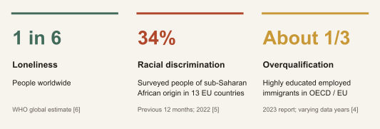
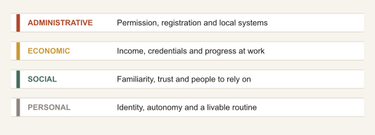
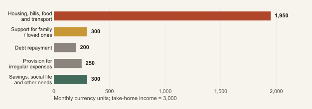
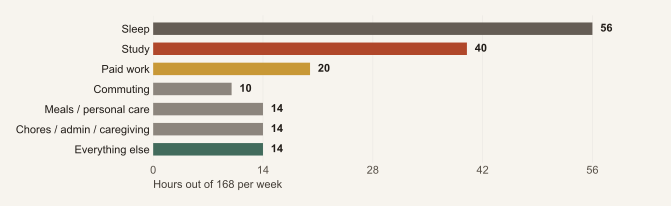
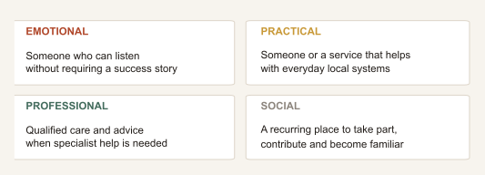

I Thought I Would
Be Happy by Now
A life beyond arrival. For Africans moving abroad to study, work or explore, a report on the gap between the life you imagined and the life you are living, and how to build connection, support and choices.
AFRICA GLOBAL FORUM / SPECIAL REPORT
The report in two minutes
You can be grateful for the move and still be unhappy with parts of your life. An admission letter, a job offer or a new country can open doors. It cannot, on its own, create friendship, rest, belonging or a sense of purpose.
This report is for Africans preparing to leave, finding their feet or quietly wondering why arrival has not felt like the finish line. It includes movement within Africa as well as beyond it, and people combining study, work and exploration.
- Separate opportunity from everyday experience. A move may improve safety, income or freedom while making ordinary life harder in other ways.
- Identify the problem before judging the whole move. Loneliness, an unsuitable job, unaffordable housing and ill health need different responses.
- Budget for a life, not only a journey. Include the time and money needed for relationships, care, rest and unexpected changes.
- Build support before you urgently need it. Keep meaningful ties to home and develop people and places you can rely on where you live.
- Treat your plan as revisable. Staying, changing circumstances and returning all deserve a fair assessment. None is a complete measure of your worth.
The evidence shows both benefits and difficulties. There is no single reliable statistic describing the happiness of all Africans abroad, and no deadline by which everyone should feel settled.
The central question is not simply “Was moving worth it?” It is “What would make the life I am living more sustainable, connected and my own?”
Explore the figures · Download figure data (CSV)
Section 01The life you reached, and the life you expected
The visa arrived. The flight happened. You found a room, learned a route to work or campus, and sent the photograph everyone had been waiting for.
Then came an ordinary evening. Nothing dramatic had gone wrong. Yet you did not feel the way you thought someone in your position should feel.
This opening is an imagined scene, not testimony from an interview. Its question is the starting point of this report: what happens when a visible achievement does not produce the private feeling we attached to it?
The promise can become too large
A move is a concrete decision about a place, a course, a job or an experience. We can load it with additional hopes: to feel successful, to become confident, to rescue the family, to find love, to escape an old identity, or finally to stop worrying. Some hopes may be fulfilled. Others require changes that a border crossing cannot deliver by itself.
That does not make the original decision foolish. The alternatives at home may have been constrained. A move can be the best available choice and still involve losses.
Gratitude and disappointment can coexist
Being thankful for a scholarship does not make loneliness unreasonable. Earning more does not cancel exhaustion. Missing home does not prove that leaving was a mistake. Enjoying freedom abroad does not require rejecting where you came from.
The useful task is to make the disappointment more specific. “I hate life here” may contain several different problems: “I have no one to call locally,” “my work uses little of my training,” or “I cannot afford the life I thought this salary would buy.” Specific problems create more possible responses.
You do not need to turn a difficult season into a verdict on your entire journey. You also do not need to pretend it is only a season if the conditions keep harming you.
Section 02What the evidence actually tells us
Figure 1. Three findings, three different populations


These figures describe different populations and different outcomes. They should not be combined into an “African unhappiness rate.” They show why individual effort is only part of the story.
There is also evidence of gains. A 2018 World Happiness Report analysis used data on more than 36,000 first-generation migrants. Its matching analysis estimated a 0.47-point advantage on a 0-10 life-evaluation scale relative to comparable people in countries of origin. This was observational, not a random assignment or an African-only forecast. [2]
A migration-ballot study on the Tonga-New Zealand route found improvements in mental health, particularly for women and people with poorer initial mental health. Its stronger research design challenges the assumption that migration necessarily damages wellbeing, but its findings are specific to that route. [3]
Better prospects and difficult days are compatible
Evaluating your life overall, feeling good today and having good mental health are related but different. A person can value the opportunities a move created while struggling with a particular job, relationship or period of isolation.
This report argues for more complete preparation, not for or against migration.
Section 03Arrival happens on more than one timetable
Figure 2. Four areas of arrival


A residence document can arrive before a sense of belonging. Confidence at work can return before financial stability. A person may build friendships quickly while still waiting for qualifications to be recognised.
When progress in one area becomes the measure of everything else, it is easy to interpret normal unevenness as personal failure. The practical alternative is to ask which part of life needs attention, and which kind of help could change it.
There is no compulsory adjustment curve
The familiar story of honeymoon, crisis and eventual recovery can describe some experiences. It is not a timetable everyone must follow. A longitudinal study of 35 Japanese students in New Zealand found neither of its adjustment measures followed the proposed U-curve. That small, older study is a useful counterexample, not a replacement schedule for Africans. [12]
Relocation, bereavement, redundancy, graduation or a permit decision can change how settled someone feels years after arrival. A setback does not erase previous progress.
Set review dates for your circumstances, rather than deadlines for your feelings. “Next month I will review my housing options” is more useful than “Next month I must be happy.”
Section 04Students: admission is only the beginning
A student can arrive with academic ability and still struggle to understand an unfamiliar system. Assessment conventions, supervision, speaking in seminars, academic integrity rules and the confidence to ask for help all have to be learned. UKCISA’s student guidance recognises the practical and emotional challenges of adjusting to a new setting. [19]
If tuition has required family sacrifice or debt, an ordinary difficulty can feel like a moral failure. Working alongside study can make the pressure sharper: the same hours cannot pay the rent, prepare an assignment, provide sleep and build friendships.
Evidence beyond the usual destinations
Research with 16 African international students at a South African university identified positive relationships with local and other international students as contributors to social, psychological and educational wellbeing. The institution’s spaces for interaction also mattered. This is qualitative evidence from one university, not a percentage of all students. [7]
A study of 15 African students at three Chinese universities described a mixture of academic support, communication challenges, financial concerns and personal growth. Participants had lived in China for four to seven years. Adjustment therefore deserves attention beyond arrival week. [9]
Make the hidden curriculum visible
- Ask your department what successful work looks like: sample assessments, marking criteria, supervision expectations and feedback routes.
- Identify a named academic contact and the route to student wellbeing support. Find out about eligibility, cost and confidentiality before a crisis.
- Check your actual permission to work and the effect of any course interruption with a qualified adviser. A friend’s visa experience may not apply to you.
- Choose one recurring activity where attendance does not depend on high spending or high confidence.
- Review the total workload early. If the plan depends on consistently sacrificing sleep or breaching work conditions, the plan needs changing.
A degree is easier to benefit from when the person earning it has enough support to remain well and engaged.
Section 05Workers: income, dignity and room to grow
A job can improve a household’s finances without making full use of the worker’s experience. That gap matters. A skilled person repeatedly treated as a beginner may begin to confuse unfamiliar credentials, limited networks or exclusion with a lack of ability.
OECD evidence documents substantial overqualification among highly educated immigrants. It describes a mismatch between qualifications and job skill level, not a deficiency in the people doing the work. [4]
A bridge job needs a review point
There is dignity in essential, service, manual, professional and care work. The issue is whether a job is safe, fairly compensated and compatible with your needs and goals. If you take work as a temporary bridge, define what it is bridging towards: recognised credentials, language fluency, savings, local references or a different role.
Without a next step or review date, a temporary compromise can become an indefinite arrangement. Conversely, a job originally seen as temporary may become a satisfying career. Your own assessment matters more than the status other people attach to its title.
Separate three kinds of difficulty
| The problem | A useful first response |
|---|---|
| A skill or system is unfamiliar | Seek specific training, a mentor, clearer expectations or supervised practice. |
| Workload or management is harmful | Explore adjustments, occupational health, worker representation or a supported job change. |
| There may be exploitation or discrimination | Keep records safely and seek confidential help from a competent local service. |
WHO identifies excessive demands, low control, discrimination and insecurity as workplace mental-health risks. Improving working conditions is therefore part of the response, alongside support for individuals. [13]
Before accepting an overseas role, verify the employer, contract, deductions and recruitment arrangements independently. The ILO’s fair-recruitment guidance says workers should not bear recruitment fees or related costs; actual local rules and enforcement require checking. [14]
Section 06Explorers: freedom needs a livable shape
Some people leave primarily to discover a different way of living. They may travel, join a partner, take a career break, work remotely where permitted or try a new city without intending permanent settlement.
Exploration is a valid reason to move. It does not need to be justified by a prestigious qualification, a salary increase, marriage or children. But fewer external commitments can also mean fewer ready-made routines and fewer people who expect to see you tomorrow.
Decide what the experience is for
“I want to explore” becomes more useful when made concrete: learn a language, spend time in a creative community, discover whether a city suits me, reconnect with family, or recover space to think. You can change the goal, but naming it helps distinguish meaningful exploration from an expensive period of drift.
A visitor’s relationship with a place differs from a resident’s. A beautiful week of restaurants, sightseeing and flexible hours does not reveal what it is like to navigate healthcare, negotiate a lease or work through the quieter months.
Put boundaries around the experiment
Write down an affordable duration, the money reserved for leaving, a review date and the conditions under which you would change the plan. Check entry, stay, work and insurance rules for your own activity. Permission to visit should never be assumed to include permission to work.
Try ordinary life as well as the highlights: shopping, public transport, neighbourhood routines and a recurring local activity. Ask residents with similar resources what they find difficult, as well as what they love.
The aim need not be to find a perfect country. It can be to learn what kind of daily life suits you. A shorter stay that answers that question can be successful. So can discovering that you prefer a stable base with occasional travel.
Section 07The salary is not the whole budget
Figure 3. What remains after the commitments?


The example shows why a larger salary can coexist with limited room to breathe. It is illustrative, not a recommended allocation. Actual costs depend on household size, destination, status and circumstances.
Family support can be an expression of love, reciprocity and shared progress. It becomes harder to sustain when the commitment is based on a headline salary rather than what remains after essential costs and obligations.
Make your capacity visible
Use take-home income and actual bills. Account for irregular expenses such as permit renewals, tuition instalments, emergencies and travel. Agree what support is regular, what is exceptional and when the arrangement will be reviewed. A clear limit can protect both the relationship and the continuity of support.
Where resources allow, include small, realistic amounts for social life and restorative activities. The cheapest room may come with a commute that makes everything else harder. The highest-paying shift may remove the only time you can see people. These are trade-offs to assess, not rules about what everyone can afford.
An overseas income should be assessed by the life it can sustain, including the person earning it.
Section 08Some difficulties are structural
Racism, xenophobia, inaccessible services, insecure housing and restrictive employment arrangements cannot be reduced to a failure to think positively. Being able to name an external barrier can prevent a person from absorbing it as a judgment about their worth.
FRA’s 2022 survey found that 34% of respondents of sub-Saharan African origin across 13 EU countries reported racial discrimination in the preceding year. The population included immigrants and descendants, rather than only recent arrivals. The finding supports taking discrimination seriously; it is not a ranking of every possible destination. [5]
One continent does not mean one experience
North African and sub-Saharan African identities, nationalities, languages and histories are distinct. Not every African identifies as Black. Treatment can differ by race, religion, accent, gender, disability, sexuality, class and migration status, and by neighbourhood or institution within the same country.
Moving to another African country also involves real border, language and belonging questions. Shared continental identity does not guarantee familiarity, inclusion or access to services.
A practical response has several levels
Protect yourself first. If something feels unsafe, prioritise a safer place and appropriate local support. You do not need to personally confront an aggressor to prove confidence.
Preserve useful information safely. Dates, messages, contracts and the names of witnesses may help a competent adviser assess options. Avoid taking steps that put your employment, privacy or immigration position at additional risk without advice.
Find the right route. A workplace representative, student adviser, equality body, legal clinic or migrant organisation may address different parts of the problem. Availability and rights vary.
WHO documents financial, linguistic, administrative and status-related barriers to healthcare for migrants. Navigating these barriers needs service reform as well as better information. [18]
Resilience should expand your choices. It should not become an expectation that you tolerate preventable harm indefinitely.
Section 09Missing home is more than missing a place
You may miss being known without explanation: the joke that needs no translation, the relative who notices your mood, the food that marks an ordinary Sunday, or the confidence of knowing how things work.
A small study with nine Ghanaian students in the UK explored separation, belonging and emotional connection to home. It offers a useful lens on what can be lost when life looks successful from outside; it does not describe every Ghanaian or African experience. [10]
Relationships need new arrangements
Distance changes the practical work of staying close. Time zones, shift work, travel costs and different expectations can turn a simple call into a difficult negotiation. Instead of relying only on spontaneous availability, agree rhythms that people can actually maintain.
For couples, discuss who is gaining opportunities and who is giving something up. An accompanying partner may need support with a career, language, friendships or independence. A household can improve financially while one member becomes more isolated.
For parents and caregivers, the issue may be who is present for illness, school events or ageing relatives. For people without children, the question of long-term support still matters. Friendship, chosen family and community can be central parts of that plan.
Stay connected without being constantly on call
Being reachable at all times is different from being meaningfully connected. Some calls can focus on ordinary life, humour and affection rather than money, emergencies or proof that the move is going well.
It is also reasonable to keep parts of your life private. You can say, “I am still glad I came, and I am finding this part difficult,” without promising to provide a complete account or defend the entire decision.
The goal is not to replace home. It is to have relationships that support the person you are becoming as well as the person others remember.
Section 10The pressure to look as if it worked
The public story of migration is easy to compress into milestones: the flight, the graduation, the first car, the new apartment. The private story contains waiting rooms, empty evenings, repetitive work and decisions nobody photographs.
This report’s interpretation is that a person can end up managing two projects: building a life and producing evidence that the life is successful. The second can consume time and money that the first needs.
Replace the audience’s scorecard
Ask whether a choice improves your actual week or mainly improves its appearance. Does this purchase create security or create pressure? Does posting help you connect, document or earn, or leave you feeling obliged to perform a version of yourself?
Social platforms can also be useful: discovering communities, maintaining relationships and finding practical information. The test is what a particular pattern of use does in your life, rather than a blanket judgment about technology.
Let the good life contain ordinary days
An ordinary routine abroad is still an ordinary routine. A move does not obligate you to be adventurous every weekend, productive every evening or grateful in every conversation.
Protect an activity that is not another test of progress. It can be inexpensive: a shared meal, a walk, a library visit, music, sport, prayer or making something for its own sake. Choose what fits your beliefs, health, safety and resources.
Be careful about making the next milestone the only permission to enjoy your life: after graduation, after permanent residence, after the promotion, after the family is fully provided for. Some goals matter deeply. They can still keep moving further away.
A useful question is: “If the next milestone takes longer than expected, what would make this period worth living through, rather than only waiting through?”
Section 11The body, the neighbourhood and the week
Wellbeing is lived through a body and a timetable. Long journeys, irregular shifts, poor sleep, inaccessible facilities, overcrowding and unfamiliar routines can make a promising opportunity hard to enjoy.
In a qualitative study of 18 African and Middle Eastern newcomers in Ontario, participants described loneliness, unfamiliar language and culture, and winter conditions among their challenges. Friends, family, learning and community involvement were also sources of support. The mixed sample and small size mean these are accounts of experience, not Canadian prevalence estimates. [8]
Look at a normal week
Figure 4. A busy week has limited spare capacity


This imagined week leaves 14 hours for everything not already listed, including friendship, exercise, worship, hobbies and unplanned needs. It is not evidence about typical students and does not establish permitted work hours in any jurisdiction.
The point is to inspect capacity before prescribing another activity. “Join more groups” may be unrealistic when someone has no reliable time, transport or childcare. A useful change might be a nearer room, a shared journey, a different shift or help with a practical task.
Notice how sleep, mood and energy change with your routine or environment. Persistent or significant changes deserve a conversation with a health professional. Do not assume that every difficulty is simply culture shock or weather.
Sometimes the next step is to remove a burden before adding a goal.
Section 12Build support that has more than one job
Figure 5. A support network with different roles


One person may fill several roles, but no single friend, partner, community or service has to meet every need. Where possible, avoid placing all support inside a relationship that also controls your housing, income or permission to stay.
Build connection through repeated contact
Choose places where you can return: a class, neighbourhood group, sports session, association, volunteering opportunity where permitted, or faith community if it suits you. Repeated contact creates chances to become familiar; it does not guarantee friendship, and you are allowed to leave a group that feels unsafe or unwelcoming.
Start with manageable invitations. A short walk or shared lunch can be easier to maintain than an expensive outing. Keep ties to home while also making room for people who share your present circumstances.
Ask for the kind of help you need
“Can you listen for ten minutes?” makes a different request from “Can you help me understand this letter?” or “Could you come with me to an appointment?” Clarity makes it easier for others to respond and easier to notice when professional help is needed.
WHO’s evidence review emphasises community support, basic needs, security and access to care among the conditions relevant to migrant mental health. This support map is AGF’s practical way of thinking about those needs, not a validated intervention. [1]
Belonging includes being able to contribute, receive help and be known outside your achievements.
Section 13When feeling low needs more support
Disappointment, homesickness, loneliness, stress and depression are not interchangeable. A difficult feeling is not automatically an illness. Equally, a serious difficulty should not be dismissed because “everyone struggles abroad.”
WHO describes a depressive episode as low mood or loss of interest lasting most of the day, nearly every day, for at least two weeks, alongside other possible symptoms. Duration alone does not establish a diagnosis. If symptoms persist, interfere with daily life, or feel severe, contact a qualified health professional; you do not have to wait two weeks to seek help. Effective treatments exist. [15]
Make the first step practical
Depending on your location and eligibility, a starting point may be primary care, a campus health service, an employee programme, a community clinic or a qualified counsellor. Ask about cost, waiting times, language support and confidentiality, including its limits. Find out how records are handled rather than assuming every service works the same way.
If it helps, begin with what has changed: sleep, appetite, concentration, motivation, alcohol use, attendance or the ability to manage everyday tasks. You do not need perfect terminology or a diagnosis before making contact.
Support from friends, family and trusted faith or community leaders can be valuable. It can coexist with professional care. Small qualitative research with eight male Nigerian students in the UK highlighted how identity, masculinity and service barriers can shape help-seeking; it should not be used to stereotype African men. [11]
WHO’s freely available Doing What Matters in Times of Stress offers practical self-help material in multiple languages and audio formats. It can be a useful resource alongside other support. [16]
Urgent help: if you are in immediate danger or think you may act on thoughts of harming yourself, contact the local emergency number or go to the nearest emergency department. Reach out to a trusted person who can stay with you if possible.
This is general health information, not a diagnostic checklist. You deserve support without first proving that your situation is worse than someone else’s.
Section 14Prepare for life, not just departure
The following is an AGF planning tool, not a clinical programme or a promise about how quickly you will settle. Adapt it to your resources, responsibilities and actual permission to stay and work.
| Stage | Actions that make the plan more complete |
|---|---|
| Before leaving | Speak to people with similar income, status and responsibilities. Verify housing, course or employer details. Build a realistic budget. Learn how healthcare works. Agree family expectations and an emergency contact plan. |
| First month | Secure essential documents and services. Learn local routes. Identify one professional or institutional contact and one recurring place to meet people. Recheck the budget against actual bills. |
| Following months | Review workload, sleep, social contact and progress towards your own goals. Change one manageable condition at a time. Keep track of relevant deadlines and get advice early. |
| After a major change | Reassess support after graduation, a breakup, a move, illness, a new job or a permit decision. Earlier routines may no longer fit. |
A monthly conversation with yourself
Ask: What has improved? What is becoming harder? Which difficulty is within my control, which needs help, and which needs a larger change? Who can I speak to honestly? What is one realistic action before my next review?
Use observations, not a single happiness score. “I have missed several classes,” “I spoke to someone I trust,” or “I now understand the credential pathway” can be more useful than rating an entire life out of ten.
If money is tight, prioritise low-cost and accessible options rather than adding another standard you cannot afford. If time is the constraint, look for changes to the schedule. If safety is the issue, do not make self-improvement the first response.
Preparation should make it easier to ask for help and change course, not create a new performance target.
Section 15Stay, change the conditions, or return?
The choice is rarely only “keep enduring” or “go home.” It may involve a different role, accommodation, city, course, household arrangement or pattern of travel. Some options need money, permission or time you do not currently have. Start with what is possible and what advice would expand the options.
| Option | Questions to investigate |
|---|---|
| Stay with changes | Which specific condition can improve? Who can help? What would count as progress, and when will I review it? |
| Move within the country or change institution | Would the change address the actual problem? What are the costs, legal conditions, support and practical risks? |
| Pause or take a planned break | Is it affordable and permitted? What happens to study, employment, healthcare, housing and re-entry? |
| Return or move elsewhere | What would I return to or move towards? What income, relationships, care and realistic opportunities would be available? |
Compare real alternatives
Compare the next year abroad with a realistic next year elsewhere, not your hardest current day with a remembered holiday at home. Include money, safety, relationships, health, autonomy, meaningful work and the needs of dependants or loved ones.
Past spending explains why the decision feels heavy. It does not, by itself, establish which future choice is best. At the same time, obligations and legal consequences cannot simply be wished away. Obtain qualified advice before changes that may affect immigration status, study or employment.
Returning may bring relief, opportunity and renewed connection. It may also need its own adjustment: relationships and circumstances can have changed. IOM’s reintegration guidance recognises the psychosocial dimensions of return. [17]
You are allowed to revise a plan after learning what it actually feels like to live it. Choose the most workable future available, with support, rather than the story that is easiest to explain to an audience.
Section 16Institutions and communities have a role
It is unreasonable to recruit students and workers on the promise of opportunity, then leave the practical conditions of living entirely to them. The recommendations below are AGF proposals informed by the evidence, rather than claims that one programme works everywhere.
Universities and education agents
Provide realistic living-cost information and accurate explanations of course demands, support and work conditions. Offer orientation beyond the first week, clear academic feedback routes, and accessible services for students who work or care for others. Create recurring opportunities for interaction rather than relying only on large welcome events. Student research in South Africa makes the importance of institutional spaces visible. [7]
Employers and recruiters
Explain pay, deductions, hours, credential requirements and progression honestly. Provide transparent ways to report problems and support staff through role changes. Evaluate working conditions as well as individual wellbeing initiatives. A counselling link is not a substitute for addressing an unsafe workload. [13][14]
Diaspora associations and families
Make room for conversations that do not centre only on success, money or migration advice. Offer practical accompaniment, introductions and referral information. Avoid making volunteers responsible for clinical or legal problems beyond their competence. Welcome people who return, change course or choose a different family life.
An AGF initiative worth testing
A small Life Beyond Arrival pilot could pair newcomer information sessions with recurring peer meetings, a local referral directory and private feedback. Partner with qualified services. State confidentiality limits, obtain consent, protect personal information and establish a clear route for urgent concerns.
Measure what the pilot can reasonably influence: attendance, whether people found useful support, barriers reported, referrals completed where consent permits, and participant feedback. Do not market it as preventing depression or promise happiness without evidence. Include students, workers and explorers in designing it, and make participation accessible across languages and schedules.
The objective is a better environment for building a life, with less pressure to manage everything alone.
Section 17A different definition of making it
Making it abroad can mean learning something that once felt impossible. It can mean safer surroundings, work with dignity, a dependable friendship, more freedom to be yourself, or enough stability to help someone else without losing yourself.
Sometimes it means building a permanent home. Sometimes it means gathering skills and returning. Sometimes the most valuable outcome is discovering that an ambition you inherited is no longer the life you want.
Happiness is not a document issued after enough effort. But the conditions of a satisfying life can be taken seriously: security, connection, health, autonomy, meaningful activity and room to rest. Improving one condition may not solve everything. It can still be worth doing.
You do not owe anyone a performance of happiness to justify your journey. You owe yourself an honest opportunity to understand what you need next.
How this report was prepared
This is a public-source research synthesis and original AGF analysis, with evidence checked on 5 October 2026. It draws on official guidance, comparative surveys, peer-reviewed studies and clearly identified qualitative or doctoral research. No original interviews or representative diaspora survey were conducted.
The report gives Africans from different countries equal consideration in its recommendations, while acknowledging that the available research is uneven. Much of the cited destination evidence concerns Europe, Canada, South Africa and China. The Gulf, other parts of Asia, the Americas and many African migration routes are less directly represented here. This is an evidence limitation, not evidence that their experiences are the same or less important.
Numerical findings retain their populations and observation periods. Small studies illustrate experiences; they do not establish prevalence. Refugee findings are not presented as measurements of voluntary study or work migration. The budget and weekly timetable are invented arithmetic examples. The arrival and support diagrams are AGF discussion tools, not measured trajectories or validated assessments.
The practical guidance is educational. Local healthcare, immigration, employment and service arrangements must be checked for the individual’s circumstances. Sources follow, with links and limits so readers can assess the evidence themselves.
Sources and evidence notes
- World Health Organization. Mental health of refugees and migrants: risk and protective factors and access to care (2023)
Evidence review covering diverse migrant and refugee populations. Used for determinants and barriers to care, not an African diaspora prevalence estimate. - Hendriks, Burger, Ray and Esipova. Do international migrants increase their happiness and that of their families by migrating? World Happiness Report 2018, chapter 3
Gallup World Poll analysis with over 36,000 first-generation migrants from over 150 countries and territories. Matching is observational; +0.47 is a life-evaluation point difference on a 0-10 scale, not a forecast or African-only effect. - Stillman, McKenzie and Gibson. Migration and mental health: evidence from a natural experiment (2009)
Journal of Health Economics 28(3):677-687. Tonga-New Zealand migration ballot study found mental-health improvements. The route, population and outcome differ from this report’s audience. - OECD / European Commission. Indicators of Immigrant Integration 2023, section 3.12: Overqualification
About one-third of highly educated employed immigrants in the OECD and EU were overqualified. The definition concerns job skill level, not personal ability. Reporting years vary; this is not a 2026 African-only measure. - European Union Agency for Fundamental Rights. Being Black in the EU: experiences of people of African descent (2023)
2022 survey; almost 6,800 people of sub-Saharan African origin in 13 EU countries, including immigrants and descendants. 34% reported racial discrimination in the prior 12 months. Not all Africans, destinations or newcomers. - World Health Organization. Social isolation and loneliness / Commission on Social Connection (2025)
WHO reports approximately 16%, or one in six, experiencing loneliness worldwide. Global context only; not a migrant-specific or African-specific estimate. - Letsoalo, Chigeza and Wilson Fadiji. An exploration of the relational well-being of African international students at a South African university (2024)
South African Journal of Higher Education 38(4). Qualitative interviews with 16 students at one university; five women, eleven men, mean age 24. Findings describe experiences, not prevalence. - Fong and colleagues. From struggle to strength in African and Middle Eastern newcomers’ integration stories to Canada (2024)
PLOS ONE. Participatory qualitative study of 18 newcomers aged 18-30 in Ontario; 78% female, around half post-secondary students. Includes different migration categories; not nationally representative. - Muganga and colleagues. Is everywhere I go home? Reflections on the acculturation journey of African international students in China (2025)
International Journal of Intercultural Relations 105, 102136. Qualitative study of 15 students at three research-intensive universities, in China for 4-7 years. An institutional repository copy of the research paper. - Doku and Meekums. Emotional connectedness to home for Ghanaian students in the UK (2014)
British Journal of Guidance & Counselling 42(4):383-402. Two focus groups involving nine Ghanaian students; narrative analysis of belonging and separation. - University of Surrey research repository. An interpretive phenomenological analysis of the help-seeking behaviours and coping strategies of male Nigerian international students
Doctoral qualitative research with eight male Nigerian international students at a UK university. Themes included coping, service barriers, African identity and masculinity; not a statement about all African men. - Ward, Okura, Kennedy and Kojima. The U-curve on trial: a longitudinal study of psychological and sociocultural adjustment during cross-cultural transition (1998)
International Journal of Intercultural Relations 22(3):277-291. Followed 35 Japanese students in New Zealand at four points through 12 months; neither adjustment measure followed the proposed U-curve. A counterexample, not an African recovery timetable. - World Health Organization. Mental health at work
Official guidance, checked October 2026. Addresses job insecurity, excessive demands, discrimination, working conditions and organizational responses. No workforce prevalence figure is extrapolated to African migrants. - International Labour Organization. General principles and operational guidelines for fair recruitment and definition of recruitment fees and related costs (2019)
International guidance includes the principle that workers should not bear recruitment fees or related costs. It is not a guarantee about enforcement or a statement of each country’s domestic law. - World Health Organization. Depressive disorder (depression)
Official information on symptoms, duration, effective treatment and help-seeking, checked October 2026. Used for general health information, not diagnosis. - World Health Organization. Doing What Matters in Times of Stress: an illustrated guide (2020)
Public stress-management resource with language and audio options. Self-help can complement appropriate care; the report does not reproduce its exercises. - International Organization for Migration. Reintegration Counselling: A Psychosocial Approach (2019)
Professional guidance on psychosocial aspects of return and reintegration. Used to support planning for return, not to predict an individual’s experience. - World Health Organization. World report on the health of refugees and migrants (2022)
Discusses legal, financial, linguistic and administrative barriers to health. Refugee experiences and voluntary study or work migration are not treated as interchangeable. - UK Council for International Student Affairs. Culture shock for international students
Practical student guidance on adjustment and support. Specific to a UK student context; no universal adjustment schedule is inferred.
Make room for a life of your own.
Share this report with someone preparing to move, finding their feet or wondering what should come next.